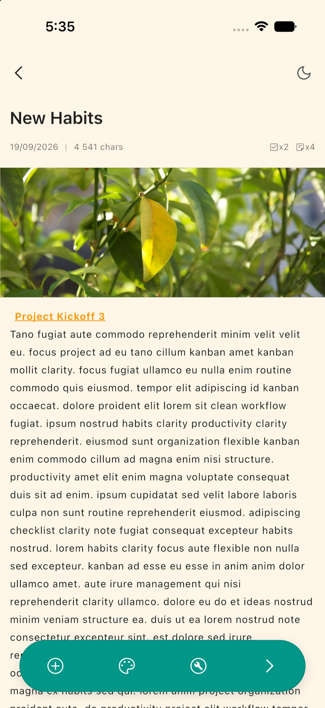
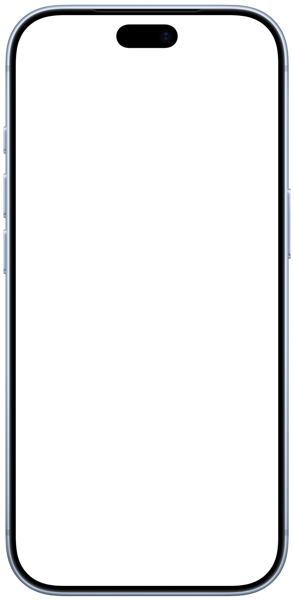
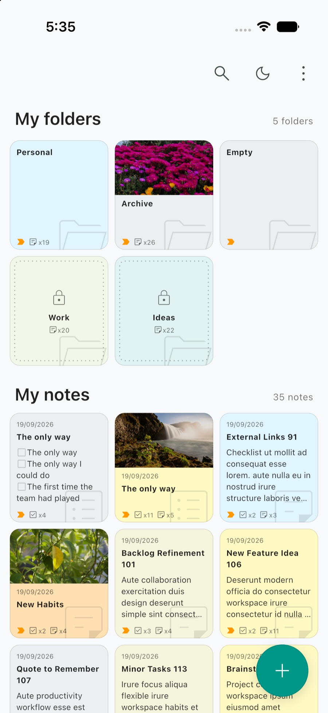
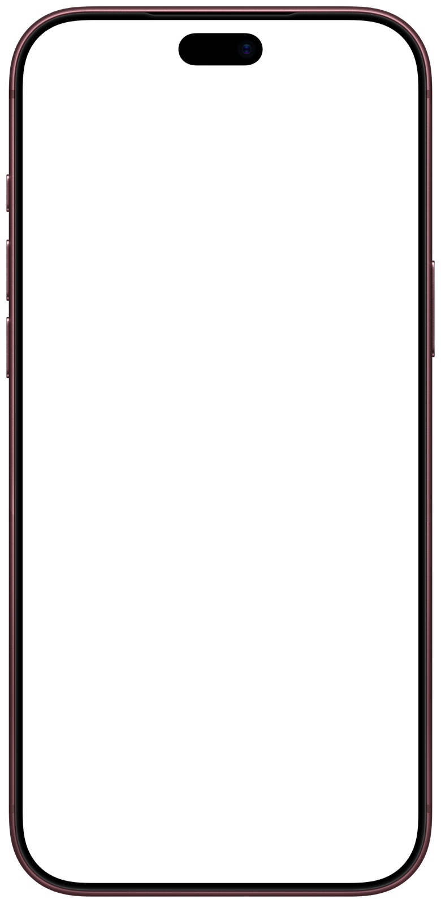

Productivity
From the first line to the last item checked. Capture a thought, split a task list, link one note to another, and let the writing stay out of the way.
Notes · Tasks · Projects · Offline
A second brain for the things you think, the things you must do, and the work you move forward. Encrypted on your phone, locked with your own fingerprint, and free of accounts, clouds and tracking.
Version 1.0 · iOS & Android · no account required, ever
One
From the first line to the last item checked. Capture a thought, split a task list, link one note to another, and let the writing stay out of the way.
Projects with their own colour, cover and bookmark. Sorting, layouts, and a search that looks everywhere it is allowed to look — and nowhere it is not.
The database is encrypted at rest. The key lives in your system keychain. Each note and each project can be closed behind your own biometrics, not a password we hold.
Two
Lightweight markdown — headings, lists, bold, inline code — and [[links]] that turn one note into a corridor to another.
Active rows on top, finished rows below a divider you can collapse. Reorder a row, count the work, keep the page honest.
Projects with a colour theme, a cover and a bookmark. Grid or list, sorted by date, title, favourite or colour.
A locked note is never a search result, even after you open it. The home search reaches into projects; the project search stays on its shelf.
A readable ZIP or an Argon2id and AES-GCM container. Importing merges and never overwrites what you already have.
English, French and Malagasy. A paper-light day theme, a warm night theme, and a text size you choose.
Three
Some work is not a list. A project is a board: columns for the stages of the work, cards for the pieces, and a drag of the hand to move a card from to do to done. It is the Kanban way of working — the feel of a Trello board — kept inside the same app, offline and encrypted.




Four
Security here is not a settings page bolted on at the end. It is the shape of the thing: local first, encrypted at rest, and honest about the few moments the network exists.
TanoNote is a place where you can think out loud without an audience. The idea behind TanoNote
Support
TanoNote is built by one person, without advertising and without a data business. Notes, tasks and projects are free and stay free. If the app earns a place in your day, here is how to help it stay that way — and none of it is ever required.
Planned
Projects and collaboration are the Premium tier. There is no price, no billing and nothing to buy yet; when it arrives, Premium is how that work gets funded — openly, not through your data.
Follow the progressSponsor
One-off or monthly, on the platform where the code already lives. It is the most direct way to fund the next release.
Sponsor on GitHubA coffee
A small one-off thank-you, with no strings attached. Take whichever door is easier for you.
Status
TanoNote is available for iOS and Android, at version 1.0. The core — notes, tasks, projects, locks and export — is stable, and the roadmap and the changelog are public on GitHub.